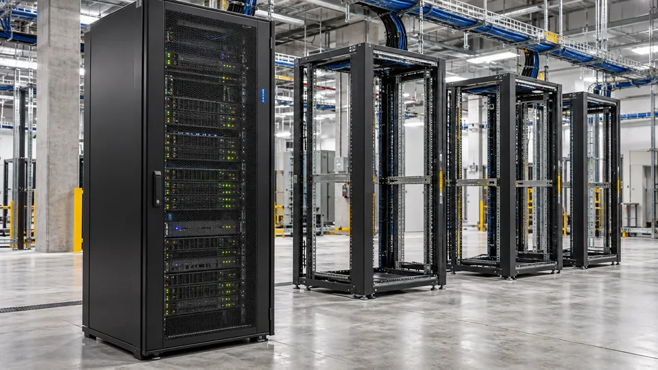

CoreWeave’s Selloff Turns the AI Boom Into a Financing Test
After a drop of more than 15% on Wednesday, further pressure on CoreWeave put the timing of debt payments and future customer cash at the center of the AI trade.

CoreWeave’s shares and bonds fell again on Thursday after its stock lost more than 15% on Wednesday, bringing the financing of the AI buildout into sharp focus. Reuters reported roughly $50 billion in debt and a yield above 16% on one bond issue during Thursday trading. Those are market signals of increased concern, not an announcement that the company has defaulted.
The immediate issue is the gap between building computing capacity and collecting the cash it is expected to generate. Strong demand can support a long-term business while leaving a company exposed to the cost of funding construction, equipment and operations before customers pay.
The concern has spread beyond one borrower. Reuters reported that five-year default-protection spreads for Oracle were quoted at 288 basis points on Thursday, up from 260 a week earlier, while CoreWeave’s exceeded 1,000 basis points. Such prices reflect the cost of transferring credit risk; they should not be read as a certain prediction of a default.
Management points to contracts; creditors examine the calendar
In an internal memo seen by Reuters, chief executive Mike Intrator argued that the company’s backlog more than supported its debt obligations. Reuters also cited a reported second-quarter revenue backlog of $104.2 billion and more than $25 billion of net new customer commitments in the third quarter. Those are management’s support for its position, rather than a guarantee that every commitment is equivalent to cash available today.
A backlog is economically useful only as it turns into delivered services, recognized revenue and collections. Debt has its own schedule. Interest and principal can become due before the corresponding customer payment arrives. The question is whether financing remains available across that interval on terms the business can sustain.
Consider a hypothetical infrastructure supplier with a five-year customer contract and a payment to an equipment vendor due this quarter. The contract may be attractive, but it does not automatically pay that invoice. The supplier still needs cash, credit or a payment arrangement. That illustration does not describe the terms of any particular CoreWeave agreement.
A secondary-market yield is not an immediate repricing of every loan
A falling bond price raises the yield demanded by a new buyer of that bond. It does not, by itself, rewrite the coupon on all existing fixed-rate debt. The immediate economic effect depends on whether the borrower needs fresh funds, faces floating-rate payments or must refinance a maturity.
The distinction cuts both ways. A company with adequate liquidity and distant maturities has more room to respond than one facing imminent funding needs. But new borrowing can become more expensive even if the outstanding fixed-rate bonds continue to pay the same coupon.
For shareholders, expensive financing matters because creditors have contractual claims on cash. Revenue can grow while less remains available to equity holders. A computing business therefore has to be assessed on the cash required to deliver its growth, as well as the size of the market it serves.
The test extends beyond one company
The broader AI trade contains several different businesses: chip manufacturing, cloud rental, software and infrastructure construction. They do not share identical funding needs or profit margins. A financing problem in one part of that chain should not be treated as evidence that every AI product has stopped selling.
It can still affect the chain. If a capacity provider becomes more cautious about expansion, equipment orders, construction schedules and customers’ deployment plans may need adjustment. That is a possible transmission mechanism, not confirmation that specific orders have been cancelled.
CoreWeave’s next disclosures will be judged on liquidity, the schedule of obligations and the conversion of contracted business into cash. Thursday’s selloff shows that investors are demanding more assurance about those links. A large backlog is part of the answer; the calendar attached to it matters just as much.
Sources (4)
Related reading: How the AI expansion is financed · TSMC’s latest manufacturing results.
For informational purposes. This article is not investment advice.